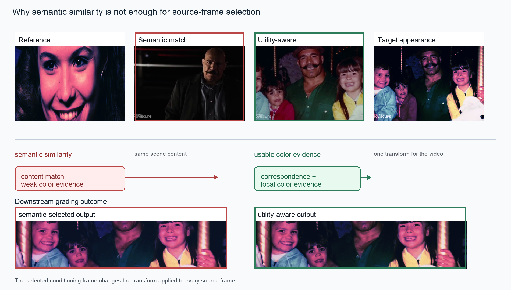
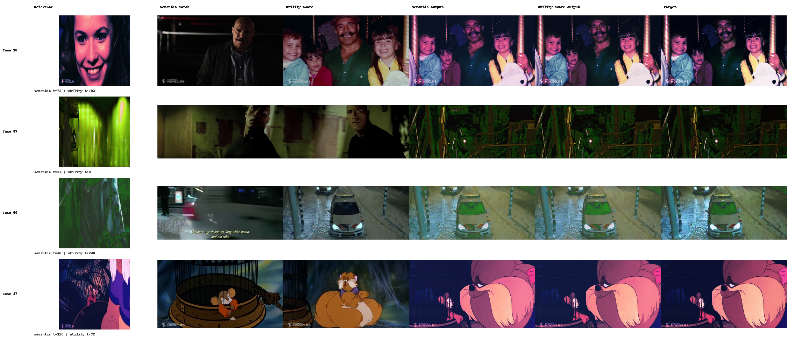

Principal VCG result
The proposed selector reaches 27.43 dB on the 100-case VCG benchmark; VCG reports 24.55 dB.
+2.88 dBarithmetic published-mean differenceReference-based video color grading
A learned decision layer estimates the grading utility of each candidate source frame using structural correspondence, local chromatic evidence, and global image context.
01 / Method
The selector receives one reference image and twenty candidate frames. Frozen DINOv2 patch descriptors provide spatial structure; a trainable RGB encoder preserves local chromatic evidence; frozen CLIP embeddings computed from the same DINO-aligned 32x32 RGB raster provide pooled image context.
Content cross-attention defines a correspondence map that also transports reference RGB tokens. A permutation-equivariant set encoder then scores candidates jointly. The selected frame is passed to the unchanged grading backend.
View the code release
02 / Evidence
The proposed selector reaches 27.43 dB on the 100-case VCG benchmark; VCG reports 24.55 dB.
+2.88 dBarithmetic published-mean differenceA matched VCG evaluator changes only the source-frame rule and measures pixel, learned-perceptual, and colorimetric fidelity.
LPIPS / CIEDE2000both decrease in the matched controlled comparisonThe released evidence focuses on a fixed grading backend and separates complete-system and selection-rule results.
VCGquantitative validation backend
03 / Reproducibility
The public artifact package binds source code, configuration, checkpoint, evaluator contracts, figures, and the evidence ledger with SHA256 digests. The manuscript is distributed separately. Target frames, candidate utilities, test ground truth, third-party weights, and private remote scripts are excluded from the package.
Code, checkpoint, configuration, and figures are packaged for public release. The manuscript is distributed separately, and benchmark media remain subject to their original terms.